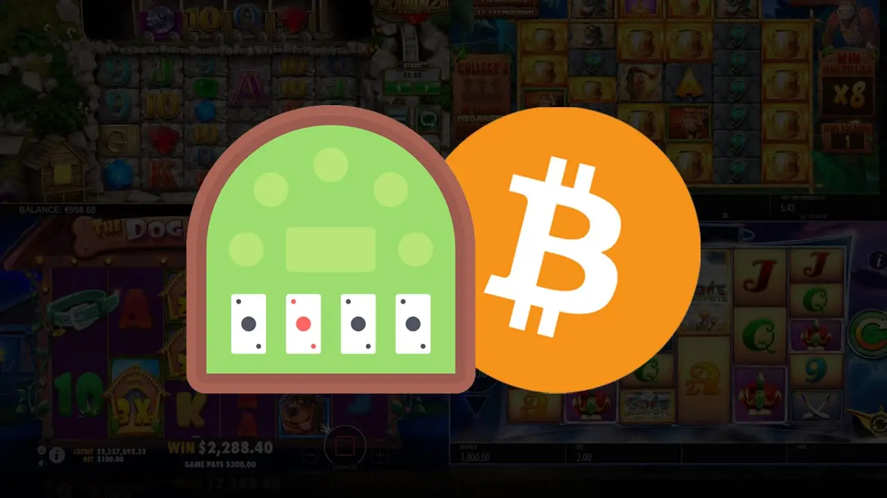

Wie man Casino Tischspiele mit Crypto spielt | Crypto Casino Table Games
Casino Tischspielen und Cryptowährungen haben die Art und Weise verändert, wie Menschen einkaufen, reisen und spielen. Cryptowährungen ermöglichen schnellere Transaktionen, mehr Sicherheit und Anonymität sowie niedrigere Transaktionsgebühren. Heutzutage akzeptieren mehr und mehr Online-Casinos Cryptowährungen als Zahlungsmittel. Wir haben ut diesen Leitfaden zusammengestellt, um Ihnen zu zeigen, wie das Spielen von Casino Tischspielen mit Cryptowährungen bei Stake.com funktioniert.
Tischspiele gehören zu den beliebtesten Casino-Spielen überhaupt. Es gibt viele Optionen für Fans dieser Spiele, die sie online spielen möchten. Es gibt jedoch nur eine Website, die eine Reihe von Casino-Tischspielen in Cryptowährung anbietet: Stake.com.
Was sind Crypto Tischspiele?
In diesem Artikel erfahren Sie, was es bedeutet, Poker, Roulette und Blackjack mit Cryptowährungen zu spielen. Wir werden auch erklären, warum Stake die beste Online-Casino-Plattform ist. Stake ermöglicht es, diese Arten von lustigen, aufregenden und interaktiven Glücksspielerlebnissen zu genießen.
Crypto-Tischspiele sind auch als Live-Casino-Spiele bekannt. Sie werden in realen Casinos gespielt, aber sie werden live gestreamt und online übertragen. Der Spieler kann den Dealer und die anderen Spieler über die Kamera seines Geräts sehen.
Ein Spieler kann diese Spiele auch auf seinem mobilen Gerät oder zu Hause auf einem Desktop-Computer spielen.
Tischspiele werden in 3 Arten unterteilt. Es sind Kartenspiele (wie Blackjack), Würfelspiele (wie Craps) und Radspiele (wie Roulette). Neben dem eigentlichen Spiel bieten Crypto-Tischspiel-Websites zusätzliche Funktionen. Es gibt Chat-Räume, in denen Sie sich während des Spiels mit anderen Spielern austauschen können.
Die beste Option für Spieler, die eine sichere und zuverlässige Plattform für Casino Tischspiele suchen, ist Stake.com.
Wenn Sie auf der Suche nach einer sicheren Plattform für Casino-Tischspiele sind, ist Stake.com die beste Option für Spieler. Stake.com ist lizenziert und reguliert von der Regierung von Curacao. Das bedeutet, dass es von einer unabhängigen dritten Partei überprüft und als sicher für Spieler befunden wurde. Außerdem wird es von der UK Gambling Commission (UKGC) reguliert. Das bedeutet, dass es die von den Aufsichtsbehörden weltweit geforderten Standards für den Spielerschutz erfüllt.
Das Wichtigste an Stake.com ist, dass es eine große Auswahl an Live-Dealer-Casino-Tischspielen bietet. Es bietet auch traditionelle Online-Casino-Spiele wie Slots, Roulette, Blackjack und Poker. Die Spieler können aus mehr als 100 verschiedenen Tischen wählen. Einige einzigartige Optionen wie Baccarat mit echten Dealern und Roulette ohne Null auf dem Rad!
Der Aufstieg der Cryptowährungen hat zur Entstehung von Bitcoin Casinos und Tischspielen geführt.
Der Aufstieg der Cryptowährung hat zur Entstehung von Bitcoin-Casinos und -Tischspielen geführt. Diese Casinos sind aufgrund des Fortschritts der Blockchain-Technologie eine sichere Möglichkeit, Tischspiele zu spielen. Crypto-Casinos sind nachweislich fair und sicher. Das ermöglicht es den Spielern, ihre Wetten zu überprüfen, bevor sie sie einsetzen.
Sie benötigen eine Bitcoin Brieftasche, um mit Cryptowährungen zu spielen oder auf etwas zu wetten.
Das erste, was man verstehen muss, wenn man mit Cryptowährungen spielt, ist, dass man eine Bitcoin-Brieftasche braucht. Eine Bitcoin-Brieftasche ist ein Ort, an dem Sie Ihre Cryptowährung aufbewahren. Es ist wie eine echte Brieftasche, die Bargeld oder Kreditkarten enthält.
Zunächst erhalten Sie Ihre Bitcoin (BTC)-Adresse und Ihren privaten Schlüssel. Dann können Sie beginnen, die verschiedenen Spiele zu spielen, die von Casinos angeboten werden, die BTC als Zahlungsmittel akzeptieren. Das Wichtigste ist, dass die Spieler sowohl ihre öffentliche Bitcoin-Adresse als auch ihren privaten Schlüssel benötigen. Dies ist für jeden Spieler, der seine Cryptowährung für Spiele online oder persönlich nutzen möchte, unerlässlich.
Cryptowährungen werden in einer Brieftasche aufbewahrt und direkt zwischen den Nutzern übertragen.
Wenn Sie mit Cryptowährungen an einem Casinotisch spielen, geht das Geld, das Sie auszahlen, nicht auf ein Konto des Casinos selbst. Stattdessen wird es direkt zwischen den Benutzern übertragen. Auf diese Weise ist Cryptowährung wie Bargeld oder Chips. Ihr Guthaben wird in einer persönlichen Brieftasche gespeichert, die sich auf Ihrem Computer oder Telefon befindet.
Zum Beispiel:
- Wenn Sie Blackjack spielen, überweist Ihr Freund 10 ETH von seiner Brieftasche auf Ihre (und umgekehrt). Dieses Guthaben können Sie dann als Währung verwenden, um während des Spiels Wetten auf Karten zu platzieren.
- Nehmen wir an, Sie spielen Craps an einem unserer nachweislich fairen Tische. Jemand anderes muss ETH an Ihre Brieftasche senden, bevor Sie Wetten am Tisch platzieren können.
Cryptowährungen werden auf der ganzen Welt akzeptiert, auch auf Stake.com.
In diesem Abschnitt werfen wir einen Blick darauf, wie Cryptowährungen auf der ganzen Welt akzeptiert werden. Wir werden auch sehen, wie sie verwendet werden können, um Casino-Tischspiele online zu spielen.
Cryptowährungen werden auf der ganzen Welt akzeptiert, auch auf Stake.com. Cryptowährungen werden bei Stake.com und anderen Online-Casinos auf der ganzen Welt akzeptiert.
Das ist wichtig, denn es bedeutet, dass die Spieler Zugang zu einer größeren Auswahl an Spielen haben. Andernfalls wären sie durch geografische Grenzen oder begrenzte Zahlungsmöglichkeiten eingeschränkt.
Es ist ganz einfach, Ihr Konto bei Stake.com aufzuladen – folgen Sie einfach diesen Schritten.
- Wählen Sie auf der Einzahlungsseite die Währung, in der Sie einzahlen möchten, und geben Sie den Betrag ein.
- Klicken Sie auf „Einzahlung“.
Denken Sie daran, Ihre Grenzen zu setzen und immer verantwortungsvoll zu spielen. Ob Sie nun unsere Live-Casino-Spiele oder Crypto-Tischspiele spielen.
Denken Sie daran, Ihre Grenzen zu setzen und immer verantwortungsvoll zu spielen. Ob Sie nun unsere Live-Casino-Spiele oder Crypto-Tischspiele spielen.
Setzen Sie Ihre Grenzen
Denken Sie daran, Ihre Grenzen zu setzen und immer verantwortungsvoll zu spielen. Ob Sie nun unsere Live-Casino-Spiele oder Crypto-Tischspiele spielen. Eine gute Faustregel ist, nie mehr als 1 % Ihres Nettovermögens auf den Ausgang eines einzigen Spiels zu setzen. Sie müssen sich wohl fühlen, wenn Sie ein solches Limit für sich selbst festlegen. Hören Sie ganz auf zu spielen, bis sich Ihre Emotionen beruhigt haben. Im Zweifelsfall sollten Sie sich vom Tisch entfernen und einen Freund oder ein Familienmitglied um Hilfe bitten, bevor Sie wieder spielen.
Online Casino Tischspiele mit Cryptowährungen zu spielen ist bei Stake.com ganz einfach
Es ist ganz einfach, Online Casino Tischspiele mit Crypto bei Stake.com zu spielen. Melden Sie sich für ein kostenloses Konto an. Zahlen Sie Ihr Konto mit Bitcoin (BTC), Ethereum (ETH), Litecoin (LTC) oder Nano ein und beginnen Sie zu spielen!
Für jede Wette, die Sie platzieren, erhalten Sie Rewards-Punkte. Ob an unseren Spielautomaten, Blackjack-Tischen, Roulette-Rädern oder anderen Casino-Spielen! Mit diesen Belohnungspunkten können Sie an verschiedenen Gewinnspielen teilnehmen. Oder Sie können neue Funktionen wie Freispiele oder Bonusrunden freischalten.
Unsere einfache Benutzeroberfläche macht es für jeden leicht, mit dem Glücksspiel zu beginnen. Beginnen Sie noch heute mit dem Glücksspiel mit Cryptowährungen wie Bitcoin und Ethereum! Wir bieten eine sichere Umgebung, in der Sie die Aufregung der Live-Casinos von zu Hause aus genießen können.
Schlussfolgerung
Cryptowährung hat es möglich gemacht, Casino-Spiele online zu spielen und dabei anonym zu bleiben. Sie können Ihr Lieblings-Tischspiel in eine unterhaltsame Möglichkeit verwandeln, Geld zu gewinnen. Sie müssen nur eines der vielen Online-Casinos wählen, die Cryptowährungen akzeptieren.
Cryptowährung und Blockchain-Technologie verändern die Welt in vielerlei Hinsicht. Wie Sie in diesem Artikel gesehen haben, verändert sie auch die Art und Weise, wie Menschen Tischspiele in Casinos rund um den Globus spielen. Wenn Sie das nächste Mal einen Besuch in Vegas planen, denken Sie daran, dass Sie das jetzt auch von zu Hause aus tun können. Alle Spieler, ob Neulinge oder Profis, können ihre bevorzugten Casino-Tischspiele spielen. Sie müssen sich keine Sorgen über Identitätsdiebstahl oder Betrug machen!
Wir möchten Sie noch einmal daran erinnern, dass hier keine Einzahlungen oder Abhebungen vorgenommen werden können, da Stake ein soziales Casino und kein Echtgeld-Glücksspiel-Casino oder eine Wettseite ist.